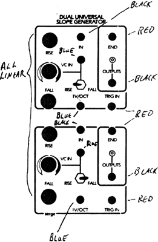

|

Dual Universal Slope Generator
The following is based on the original Serge kit assembly instructions, and is to allow builders of the Best of CGS "B" panel to wire up their DUSG.Parts for Kit
Patch the END pulse to the TRIG IN jack. Turn the RISE and FALL knobs fully CW. Patch the OUTPUT into an audio mixer or Output Module to monitor the output. There should be a 5000 Hz triangle wave present which can be changed to a sawtooth wave of lower frequency by turning down either the RISE or FALL knob. The frequency and timbre will depend upon the settings and the shape as set by the relationship between the Rise and Fall times. Patch the OUTPUT of the DSG into the control voltage input of an oscillator and listen for the proper shape as the RISE and FALL knobs are turned down to longer times. Check for proper VC action by patching a control voltage from a processor or other source into the VC In jack. Note the effect on the Rise, the Fall, and the Rise+Fall times with the position of the switch. Check that a voltage into the IV/oct IN will produce a doubling of frequency (halving of the Rise and Fall times) for each volt applied. The DSG may not track as well as the NTO's and PCO's when used as an oscillator. Remove the patch from the END and TRIG IN jacks, and apply a control voltage from a keyboard, Stopped Function, or Stapped Random Voltage Generator. Turn the RISE and FALL knobs all the way up (clockwise, and apply the output to the control input of an oscillator. The signal should be the same as the input. As the RISE and FALL knobs are turned down, there should be a portamento or slowing Effect on the changing stepped voltage. The DSG can be used as a simple envelope generator, a low frequency oscillator, pulse generator, or in a variety of other applications. As an envelope generator, the unit can be triggered in two different ways:
The DSG can be used as a slew limiting processor to change discrete voltage steps into gliding voltages (portamento). Voltages from a keyboard, sequencer, or other sources can be applied to the IN jack, and the RISE and FALL knobs will now determine the rate of glide in the positive and negative direction, independently. The slopes from the DSG are linear (equal voltages per unit of time), but they can be altered using feedback. If the OUTPUT is patched to the VC IN jack, then the slope can be given an exponential or a logarithmic shape determined by the amount of feedback set by the processing knob. Since both the RISE and FALL can be switched to be controlled separately or together, the slope of either or both can be shaped using this technique. This is useful for producing slow, gradual amplitude changes with the Equal Power VCA modules. If the TRIG IN jack is connected to the TRIG OUT jack, the DSG will oscillate with a waveform and frequency set by the RISE and FALL knobs. A series of pulses will appear at the TRIG OUT jack, and the duty cycle (the time the pulse is high compared to when it is low in each cycle) is set by the RISE and FALL knobs. The FALL knob determine how long the pulse is low. When the DSG is in the RISE part of the cycle or when the output is zero or less, the output of the TRIG OUT will be high. In some applications, a pulse with a very long duty cycle will cause erratic triggering in other modules. If such a symptom occurs, try increasing the FALL time and decreasing the RISE time to get the same pulse rate. The DSG may be used as a positive peak follower by setting the RISE time to minimum (full CW) and applying an audio signal to the IN jack. Adjust the FALL knob for a compromise between response time and the best filtering of the audio component at the DSG output. If the FALL time is turned to minimum, and the RISE knob adjusted for optimum response time and filtering, then the unit will function as an envelope, follower-producing a negative envelope corresponding to the negative peaks ofthe input audio signal. Adjustments on the DSG board are set to obtain a 0 to +5 volt level when the unit is cycling, producing a 100Hz triangle wave. An oscilloscope is required for this adjustment. This should not need to be adjusted unless components are replaced. Extra notes for the CGS114 adaptation of the DUSG/DTG PCB |
|
Both units on this board have identical labelling, as per the upper unit in the wiring diagram above. A separate LED driver board is not required. Unmarked diodes are 1N4148 or similar.
TL072 can be used in place of either op-amp. For improved triggering at higher frequencies, it is recommended that the parts in the trigger circuit be updated to the values shown in red. There is provision on the rear of the board for two 1206 100n decoupling capacitors. These are the pairs of hole-less rectangle pads. Install or ignore at your discression. It is a good idea to match the transistors of the same type in the core with each other. At least use transistors from the same batch. 2N3906 can be substituted for the 2N4250 and 2N3904 substituted for the 2N5089. Note that the pinouts of these transistors will differ. 2N3563 can be any general purpose NPN such as 2N3904. Note that the pinouts of these transistors will differ. The unit WILL run on +/-15 volts with no modification. If using high brightness LEDs with 4k7 or higher series resistors, the base resistors of the LED drivers should be increased to 150k, as per the schematic.
Please note that prior to September 25, 2011, this documentation had connections "C" and "E" swapped on the wiring diagrams. If you used the former diagram as a wiring guide, I would suggest you check your wiring again. These connections are in reverse to those used on boards produced by Serge. Parts list This is a guide only. Parts needed will vary with individual constructor's needs.
Classic Serge style knobs can be purchased from
Can't find the parts? See the parts FAQ to see if I've already answered the question. Also see the CGS Synth discussion group.
| |||||||||||||||||||||||||||||||||||||||||||||||||||||||||||||||||||||||||||||||||||||||||||||||||||||||||||||||||||||||||||||||||||||||